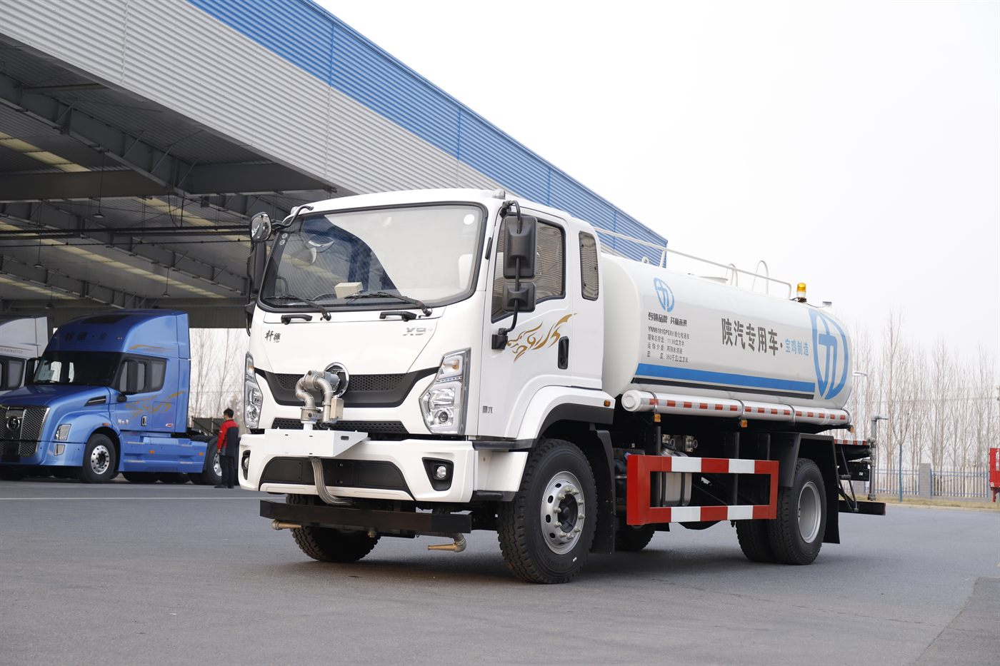

Direct answer: This guide is for overseas buyers evaluating the SAGMOTO X7 water sprinkler truck for Costa Rica. The photo, title and article all refer to the same vehicle type, and final specifications should be confirmed according to the order.
Water service buyer intent
Costa Rica buyers may need a water sprinkler truck for road watering, construction dust control, municipal cleaning or site water delivery. The key is to define the spray task before choosing the tank.
Photo and product match
The image shows a SAGMOTO X7 water sprinkler truck with tank body and front spray equipment. This article does not describe a dump truck or chassis-only product.
Specification checklist
Confirm tank volume, pump, front spray, rear spray, side spray, water cannon, hose storage and local road requirements. For hilly areas, route and brake requirements also matter.
RFQ recommendation
Send usage scenario, volume target, road condition, city or project location, quantity and destination port. A clear RFQ improves quotation speed and reduces configuration mistakes.
- destination country, port and quantity;
- cargo or jobsite use, road condition and daily work cycle;
- target payload, body or tank volume, and local registration limits;
- preferred delivery term, inspection request and spare-parts needs.
Frequently asked questions
Is this a water sprinkler truck?
Yes. The image and article are for a SAGMOTO X7 water sprinkler truck.
Can it be used for dust control?
Yes, if the spray system and tank volume are specified for the project.
What Spanish keywords match this product?
Buyers may search camion cisterna agua, cami贸n regador or water sprinkler truck.
Related product page: SAGMOTO X7 water sprinkler truck. For price and configuration, use the RFQ form or WhatsApp.
Request a configuration quotation
Andy can help compare configuration, shipping and inspection details for your market.